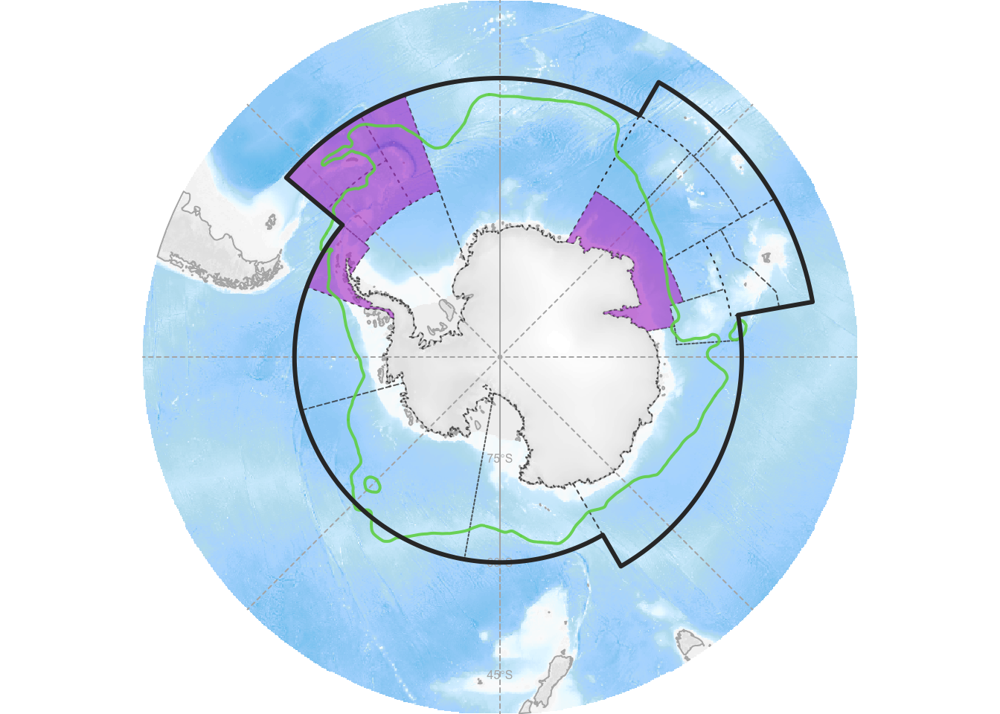

library(patchwork)
library(sf)
library(tidyverse)
library(tmap)Krill, Whales, and People Map
# Spatial
ccamlr_areas <- st_read(here::here("data", "statistical_areas"))Reading layer `statistical_areasPolygon' from data source
`/Users/frank/Documents/GitHub/collab/krillwhalespeople/data/statistical_areas'
using driver `ESRI Shapefile'
Simple feature collection with 19 features and 16 fields
Geometry type: POLYGON
Dimension: XY
Bounding box: xmin: -180 ymin: -85.41189 xmax: 180 ymax: -45
Geodetic CRS: WGS 84ccamlr_mpas <- st_read(here::here("data", "mpas"))Reading layer `mpasPolygon' from data source
`/Users/frank/Documents/GitHub/collab/krillwhalespeople/data/mpas'
using driver `ESRI Shapefile'
Simple feature collection with 6 features and 13 fields
Geometry type: POLYGON
Dimension: XY
Bounding box: xmin: -180 ymin: -85.41189 xmax: 180 ymax: -60
Geodetic CRS: WGS 84ccamlr_border <- ccamlr_areas %>%
st_union() %>%
nngeo::st_remove_holes()
antarctica_border <- ccamlr_border %>%
st_difference(st_union(ccamlr_areas))
# Whales and krill
whales_krill <- read_csv(here::here("data", "ccamlr_whales_krill.csv"))Rows: 10 Columns: 7
── Column specification ────────────────────────────────────────────────────────
Delimiter: ","
chr (4): species, era, ccamlr_regions, region_code
dbl (3): ind_krill_tonnes_day, pop_size, pop_krill_tonnes_yr
ℹ Use `spec()` to retrieve the full column specification for this data.
ℹ Specify the column types or set `show_col_types = FALSE` to quiet this message.# Areas of interest
ccamlr_aoi <- ccamlr_areas %>%
mutate(aoi = case_when(
GAR_Short_ %in% c("481", "482", "483", "484") ~ "48.1 - 48.4",
GAR_Short_ == 5842 ~ "58.4.2",
TRUE ~ NA
)) %>%
drop_na(aoi) %>%
group_by(aoi) %>%
summarize(geometry = st_union(geometry), .groups = "drop")Map
# CCAMLR Areas
tm_shape(ccamlr_areas, projection = 9354) +
tm_polygons(lty = "dotted",
col = "lightblue1") +
# CCAMLR AOIs
tm_shape(ccamlr_aoi) +
tm_polygons(col = "lightblue3") +
tm_text("aoi") +
# MPAs
tm_shape(ccamlr_mpas) +
tm_polygons() +
# Overall outline
tm_shape(ccamlr_border) +
tm_borders(col = "midnightblue",
lwd = 2) +
# Border of Antarctica
tm_shape(antarctica_border) +
tm_borders(col = "skyblue3") +
tm_scale_bar(breaks = c(0, 500, 1000))
Relative catches
# Total krill in 58.4.2: extrapolated to 8.4Mt from Cox et al. 2021
# Total krill in 48.1-48.4: 62.6Mt from Krafft et al. 2021
krill <- tibble(
aoi = c("48.1 - 48.4", "58.4.2"),
krill_biomass_Mt = c(62.6, 8.4),
# From CCAMLR fisheries 2018/19 limits
krill_tac_Mt = c(c(155000 + 279000 + 279000 + 93000) / 1e6,
2645000 / 1e6)
)
modern_whales <- whales_krill %>%
mutate(aoi = ifelse(region_code == 48, "48.1 - 48.4", "58.4.2")) %>%
filter(era == "modern") %>%
group_by(aoi) %>%
summarize(krill_consumption_Mt_yr = sum(pop_krill_tonnes_yr) / 1e6)
historic_whales <- whales_krill %>%
mutate(aoi = ifelse(region_code == 48, "48.1 - 48.4", "58.4.2")) %>%
filter(era == "historic") %>%
group_by(aoi) %>%
summarize(krill_consumption_Mt_yr = sum(pop_krill_tonnes_yr) / 1e6)
modern_plot <- left_join(krill, modern_whales, by = "aoi") %>%
pivot_longer(-aoi, names_to = "component", values_to = "krill_Mt") %>%
replace_na(list(krill_Mt = 0)) %>%
mutate(component2 = ifelse(component == "krill_biomass_Mt",
"Krill stock",
"Krill consumed"),
aoi_comp = str_glue("{aoi} {component2}"),
component_label = case_when(
component == "krill_biomass_Mt" ~ "Krill stock",
component == "krill_tac_Mt" ~ "Krill TAC",
component == "krill_consumption_Mt_yr" ~ "Whale consumption"
)) %>%
ggplot(aes(aoi_comp, krill_Mt, fill = component_label)) +
geom_col() +
scale_fill_brewer(palette = "Dark2") +
labs(y = "Krill biomass (Mt)") +
coord_flip() +
theme_classic() +
theme(axis.title.y = element_blank(),
legend.title = element_blank())
historic_plot <- left_join(krill, historic_whales, by = "aoi") %>%
pivot_longer(-aoi, names_to = "component", values_to = "krill_Mt") %>%
replace_na(list(krill_Mt = 0)) %>%
mutate(component2 = ifelse(component == "krill_biomass_Mt",
"Krill stock",
"Krill consumed"),
aoi_comp = str_glue("{aoi} {component2}"),
component_label = case_when(
component == "krill_biomass_Mt" ~ "Krill stock",
component == "krill_tac_Mt" ~ "Krill TAC",
component == "krill_consumption_Mt_yr" ~ "Whale consumption"
)) %>%
ggplot(aes(aoi_comp, krill_Mt, fill = component_label)) +
geom_col() +
scale_fill_brewer(palette = "Dark2") +
labs(y = "Krill biomass (Mt)") +
coord_flip() +
theme_classic() +
theme(axis.title.y = element_blank(),
legend.title = element_blank())
(modern_plot / historic_plot) +
plot_layout(guides = "collect") +
plot_annotation(tag_levels = list(c("Modern", "Historic")))